tampermonkey使用教程
这是一个油猴插件的安装教程 以简单上手为主（傻瓜版）
首先 打开浏览器（这里以edge为例）
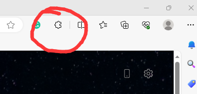
在浏览器的这个位置会有一个类似拼图的按钮，如果没有也没有关系，点击最右侧的三个小点，下拉选择栏中会存在同样的图标，配字拓展，点击该按钮，弹出对应的下拉菜单。
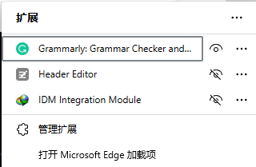
点击“管理拓展”选项，进入管理扩展的页面，这时左侧会出现搜索栏，大约如下图所示。
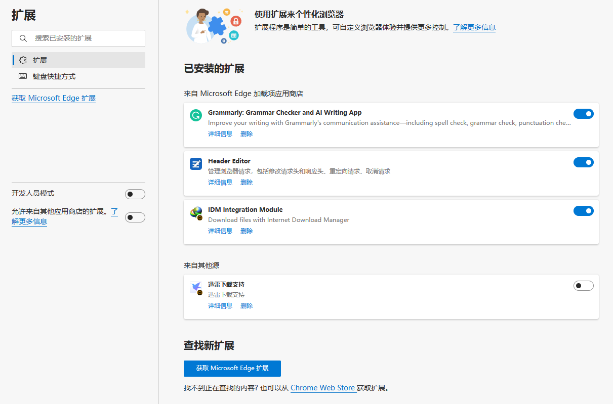
点击搜索栏下方的“获取Microsoft Edge扩展” 在新页面的搜索框中搜索“篡改猴” 会弹出搜索结果
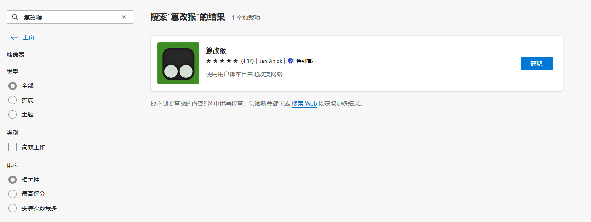
点击获取会出现弹窗
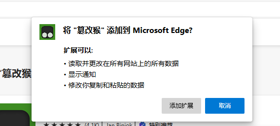
选择“添加扩展”，弹出以下界面就算安装成功
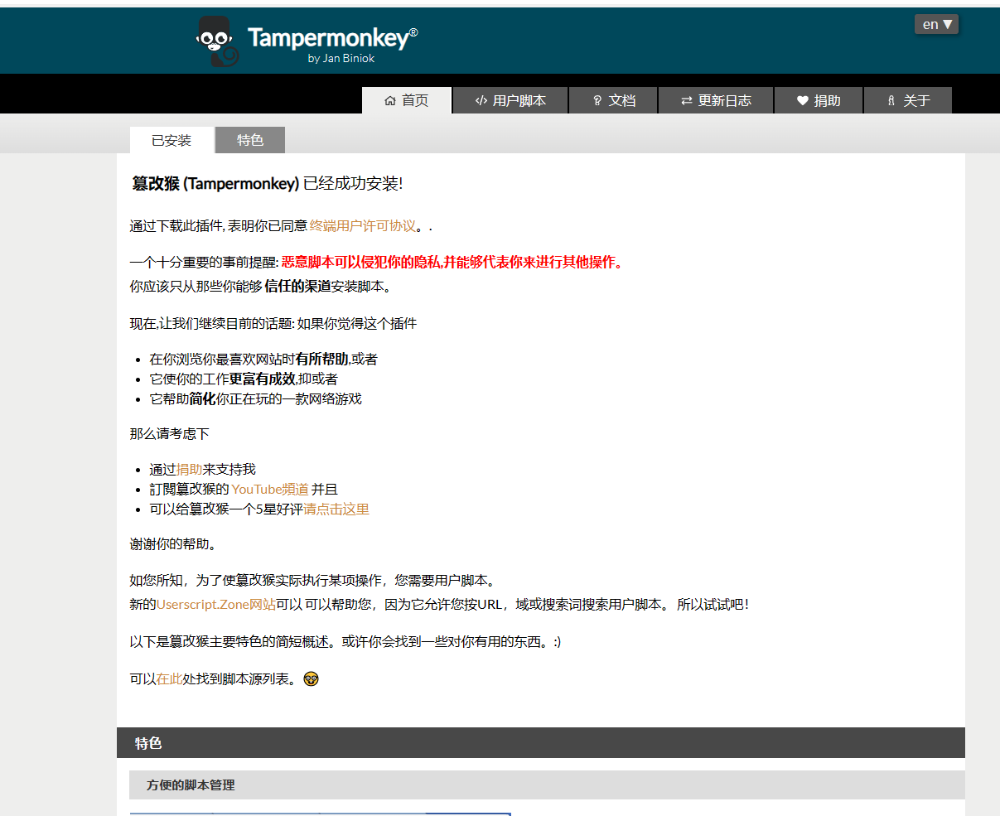
注意： 篡改猴是这个插件“Tampermonkey”的中文翻译，本身并没有什么危险性，可以算是一个各个脚本的启动器，可以放心使用，在这上面可以搭建其他脚本，有一些脚本会出现一些广告，但只要不下载很奇怪的东西都不会影响电脑使用。
第二步 下载脚本
当安装完成tampermonkey后，我们就可以下载脚本在其中使用了，这里首先推荐使用网站greasyfork.org
进入网站之后，会看到以下界面
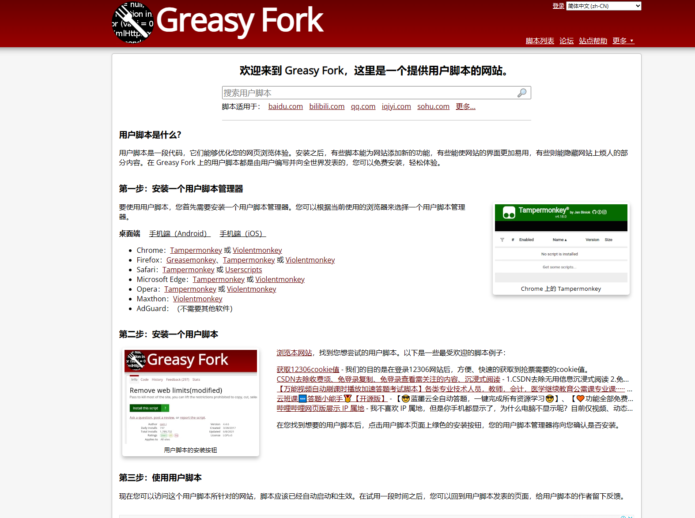
接下去很简单，只需要在其中搜索你需要的脚本功能，如果有的话就会检索到，这边拿我最常用的看视频脚本举例：
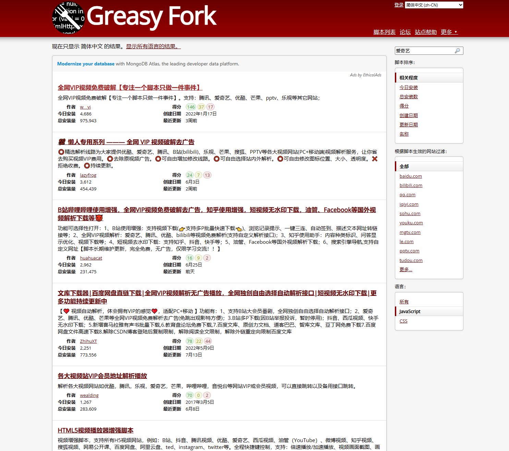
搜索爱奇艺后，会弹出这样的搜索界面，其中有很多都还可以使用，这边建议是选择一些靠前的或者更新日期较新的，我在这推荐选择第一个，即专注一个脚本只做一件事这一个，理由是广告较少。
点击进入，会看到这个界面：
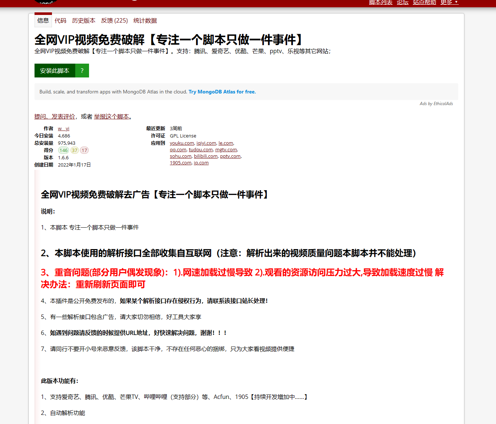
点击安装此脚本，会弹出新窗口
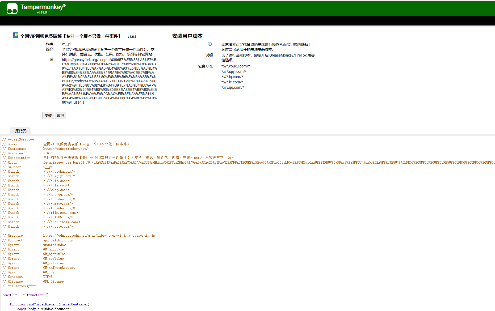
点击安装，该页面会在安装后自动关闭
那么，现在我们去找一个视频网站来试试效果8~
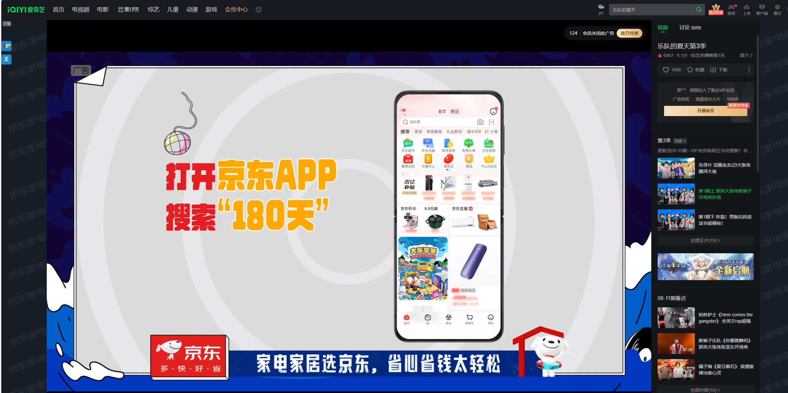
这边以爱奇艺为例，可以看到在左侧出现了一个蓝色的VIP小图标，这就是在运行中的脚本所体现的效果
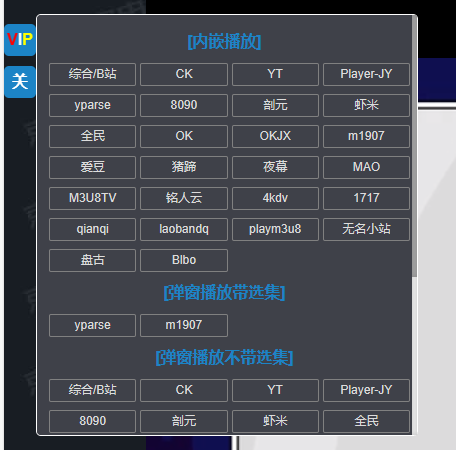
点击该图标，会弹出如上图的交互界面，这个时候随意选择其中的一个，看看能不能正常工作即可，如这里我们选择第二排的“虾米”
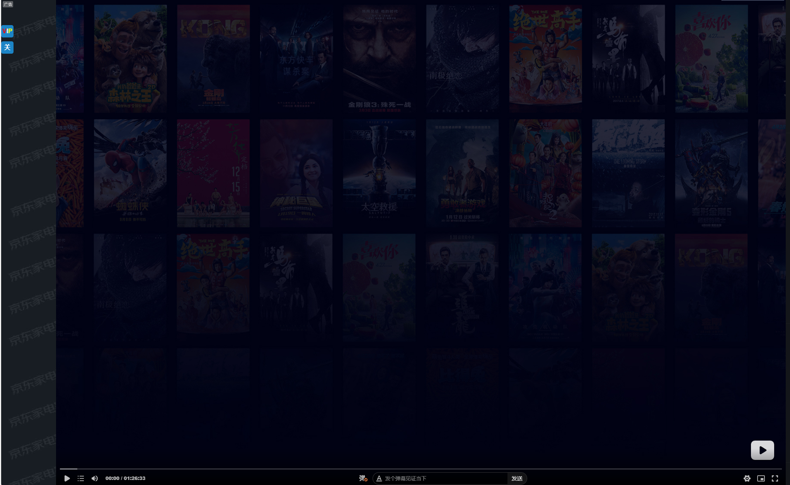
从上图中我们可以看到，在浏览器中间的播放页面被替换了 而下方的进度条出现时长则表明选择的这个“虾米”播放流在正常运作，就可以开始享受视频啦~
注意： 由于脚本会被维护和更新，有时候会打开浏览器弹出一个和之前安装脚本类似的窗口需要更新，这个时候轻轻点一下更新就可以了，不要惊慌，不要担心，对电脑并没有任何损害~
最后： 举一反三，其他脚本也可以以这样的方式安装，但是目前使用体验最好的还是这个视频脚本，之后可能会更新一起IDM的下载安装教程，敬请期待。